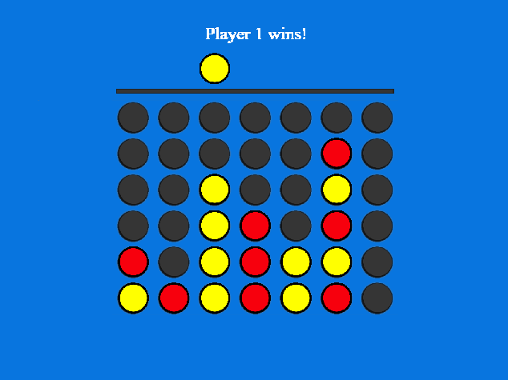

After I finished my first introduction to C++ course I decided to apply my skills in a different environment. Using the application Superpowers I was able to create models and texture them within the program itself. Then using the built in TypeScript language I used the skills learned from my C++ course to program the rest of the application. The most valuable skills I learned from this project related to managing a 2D array with a graphical interface. Also, completely picking up a language blind and having to look through documentation.
